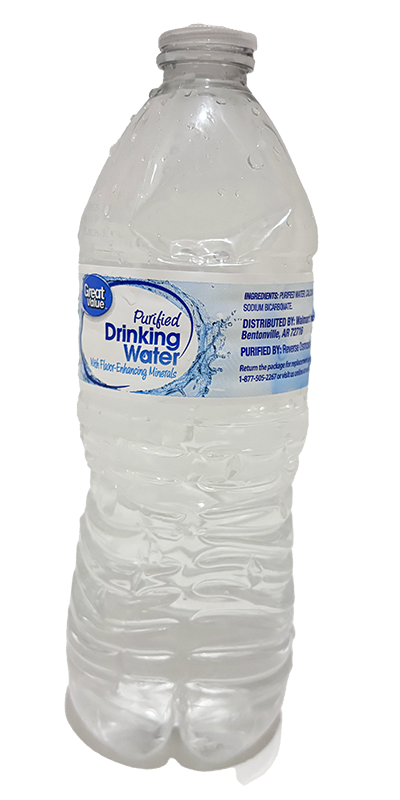
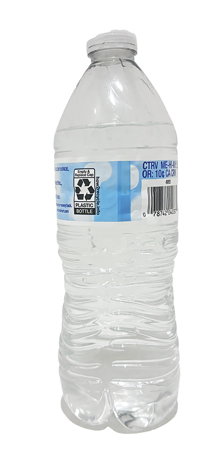
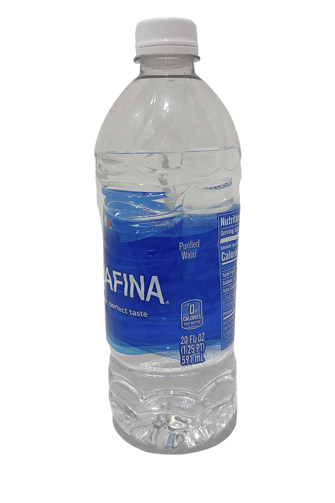
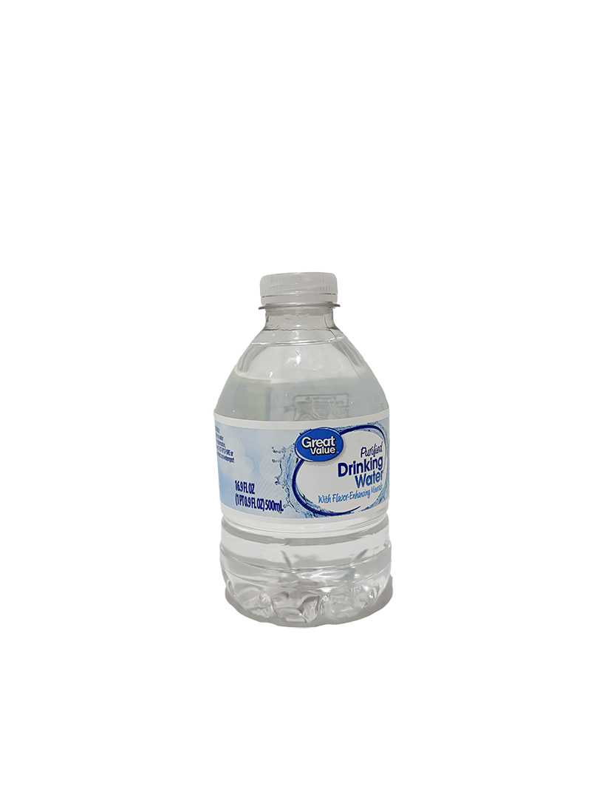
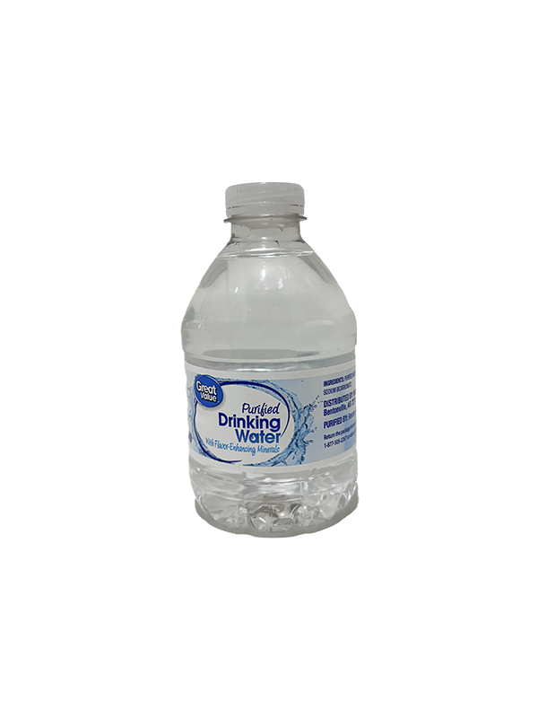

Vessels
A 40-second animated film exploring emotions and relationship of plastic bottles.
Title concepts: Vessels. Spilled Love. Treat or Cheat.
Production Period: January 25 - 31, 2025
Created by: River Yu
"Please set your volume above at least 50% before playing. Note that audio begins at 18 seconds into the clip."
Characters
Meet our three main bottles, each with their own unique personality and journey.
Main bottle.
 Okay... kids rights matter!
 Actually... don't forget the hand at last and the water poured!
(They don't have the priviledge to have headshots compared to our bottles)
This film doesn't worth this documentation if not required
A lot can be done to make it better but I am just too lazy to polish it, SORRY
Hi I am River Yu 余洋希。What I wanted to explore is the emotional weight of someone who cheats (the water turbulence scene) and also the uncertainty of fate (the hand at last), but I believe it requires longer length to achieve that given the plots and twists I designed....
Lessons learned with lack of sleep right before deadline:
- 1. Start early to implement.
- 2. Don't stay up late.
Process
Production Period: January 25 - 31, 2025
Ideation:
Implementation:
Given that the producer
Sound:
Credits
The creative team behind the film.